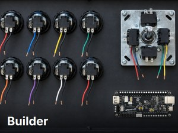
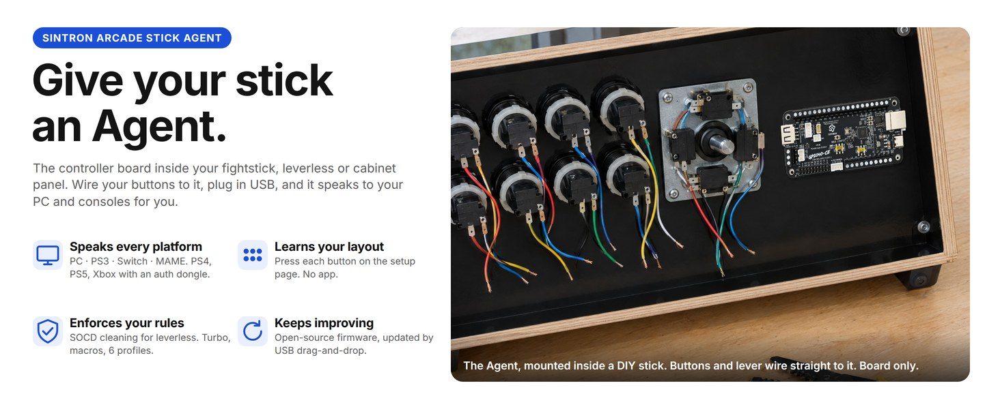
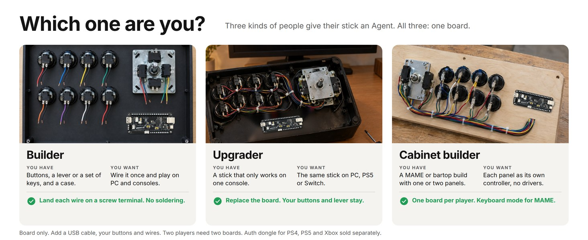
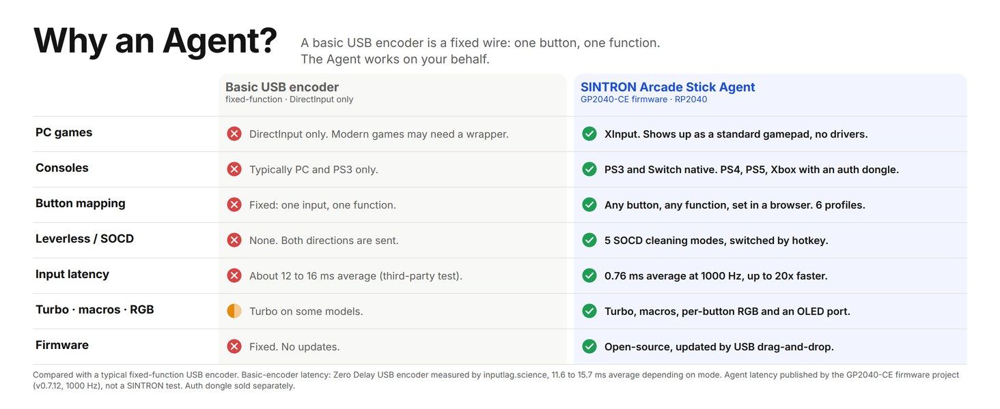
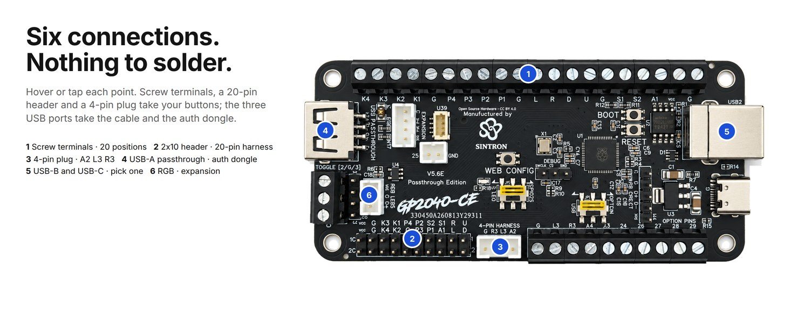
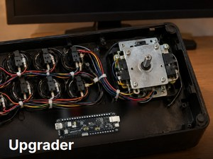
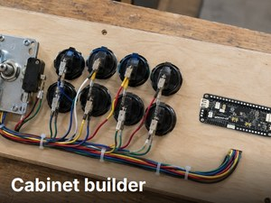
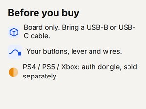

Builder
Wiring a fightstick or leverless from parts? Land each button on a screw terminal, plug in USB and map it in your browser. One board, every platform.

How the Agent fits in your stick: wire to the screw terminals, set up in your browser, pick your platform. Board only; auth dongle sold separately for PS4, PS5 and Xbox.



Stripped wire from any button lands here: 4.8 mm American or 2.8 mm Japanese. One signal and one G per button. Strip, insert, tighten. No soldering.
A loom built for the standard 20-pin layout plugs straight in. The header sits in the standard position, so a harness from your old board fits.
One plug for the three extra buttons. A2 is the touchpad button on PS4 and capture on Switch.
The authentication dongle for PS4, PS5 and Xbox goes here. Sold separately. A DualShock or DualSense will not authenticate.
Two device ports, so the board fits a panel-mount USB-B or a USB-C build. Use one at a time.
3-pin plug for WS2812B / SK6812 RGB LEDs and an I2C port for a 128x64 OLED.

Wiring a fightstick or leverless from parts? Land each button on a screw terminal, plug in USB and map it in your browser. One board, every platform.

Have a stick locked to one console? Replace its board with the Agent: your buttons and lever stay, and the stick works on PC, PS5, Switch and more.

One board per player. Each panel shows up as its own controller with its own map; keyboard mode covers MAME. Two players need two boards.

Board only: bring a USB-B or USB-C cable and your button wires. PS4, PS5 and Xbox need an authentication dongle, sold separately.
| Board | SINTRON Arcade Stick Agent: RP2040 Advanced Breakout Board, USB Passthrough Edition, revision V5.6E |
|---|---|
| Dimensions | 96.3 x 45.31 mm, 4 mounting holes, industry-standard fight-board footprint |
| Inputs | 18: 15 signals on the screw terminals plus A2, L3 and R3 on the 4-pin plug |
| Wiring | Screw terminals accept stripped wire from 4.8 mm American or 2.8 mm Japanese button terminals; G positions along the row |
| Screw terminals | 20-position, 3.81 mm pitch; plus 10 optional pins and 3 toggle terminals, also 3.81 mm |
| Header | 2x10, 2.54 mm, standard 20-pin harness position and pinout |
| Buttons on board | WEB CONFIG, BOOT and RESET |
| Expansion | I2C port for a 128x64 OLED (SSD1306 / SH1106 / SH1107) |
| RGB | 3-pin plug, WS2812B / SK6812 |
|---|---|
| USB | USB-B and USB-C device ports (use one at a time); USB-A passthrough port for the authentication dongle |
| Switches | USB / OPTION; LED / GPIO25 |
| Input modes | XInput, PS3/DInput, PS4, PS5, Xbox One, Switch, Keyboard, Original Xbox, mini-console; mode saved across power cycles |
| Profiles | 6 button-map profiles, named, switched by hotkey or on the setup page |
| SOCD cleaning | Up priority, Neutral, Last win, First win, Off (Off in XInput only) |
| Latency | 0.76 ms XInput / 0.91 ms PS5 at 1000 Hz USB polling (published by the firmware project, not a SINTRON test) |
| Firmware | Open-source GP2040-CE, pre-flashed with the current stable release; update by USB drag-and-drop; settings backup and restore |
An arcade stick is only as good as the board inside it. A basic USB encoder is a fixed wire: one button, one function, one kind of platform. The SINTRON Arcade Stick Agent is the board that works on your behalf.
It speaks every platform. XInput on PC, Raspberry Pi / RetroPie and Steam Deck with no drivers; native PS3 and Nintendo Switch modes; keyboard mode for MAME cabinets; MiSTer and Android; dedicated modes for Genesis / Mega Drive Mini, NEOGEO Mini, PC Engine Mini, EGRET II Mini, ASTROCITY Mini and PlayStation Classic. PS4, PS5 and Xbox One / Series X|S use an authentication dongle in the USB-A passthrough port.
It learns your layout. Plug in, open the setup page in your browser and press each button when it asks. Any button can be any function. Six named profiles, turbo, macros and per-button RGB are set on the same page and saved on the board.
It enforces your rules. SOCD cleaning with five modes for leverless play: up priority, neutral, last win, first win and off, switched by hotkey.
It keeps improving. The board runs the open-source GP2040-CE firmware. New releases add features and fixes; update by holding BOOT while plugging in USB and copying the .uf2 file for this board onto the drive that appears. Settings can be backed up and restored from the setup page.
It keeps your parts. 20-position 3.81 mm screw terminals take stripped wire from 4.8 mm American or 2.8 mm Japanese buttons; the 2x10 header takes a standard 20-pin harness; the 4-pin plug covers A2, L3 and R3. Industry-standard 96.3 x 45.31 mm footprint with 4 mounting holes.
It arrives ready. Every board is pre-flashed with the current stable firmware and individually checked by SINTRON before shipping: every input read on the setup page, both USB ports, the passthrough port with an authentication dongle in place, and the boot into the setup page.
Before you buy. An authentication dongle answers the console's controller check. For PS4 and PS5 that is an authentication dongle or converter, or a licensed PS4 arcade stick; a DualShock 4 or DualSense does not work. For Xbox One and Series X|S it is an Xbox authentication dongle. All are sold separately, and SINTRON does not supply console keys of any kind. Without a dongle, a PS4 stops the controller after 8 minutes; PS5 mode works with titles that support legacy controllers. PC, Raspberry Pi, PS3, Nintendo Switch, Steam Deck, MiSTer and Android need nothing extra. Board only: bring a USB-B or USB-C cable and your own button wires. Two players need two boards. The USB-B and USB-C ports are two ways into the same device connection: use one at a time. The USB / OPTION switch decides whether the passthrough port or optional pins 1 and 2 are active, not both. The LED / GPIO25 switch decides whether the on-board LED is controlled from the setup page or that pin is freed for your own use. Input latency figures (0.76 ms XInput / 0.91 ms PS5 at 1000 Hz) are published by the firmware project, not measured by SINTRON.
Made by SINTRON. Our name is on the silkscreen. Hardware questions and replacements come to SINTRON; firmware documentation and community stay with the open-source project. Based on the RP2040 Advanced Breakout Board, USB Passthrough Edition, from the GP2040-CE project (copyright 2024 TheTrain), licensed under CC BY 4.0. Changes from the original design: manufactured by SINTRON with SINTRON silkscreen. The full attribution with links is available from SINTRON on request.